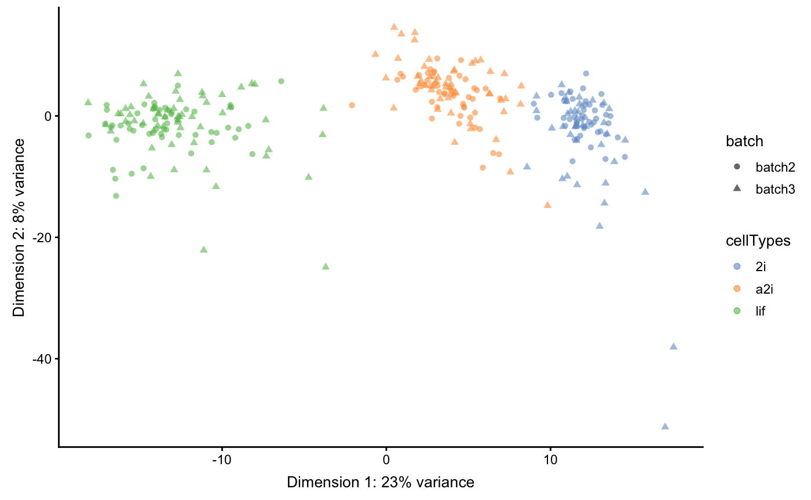
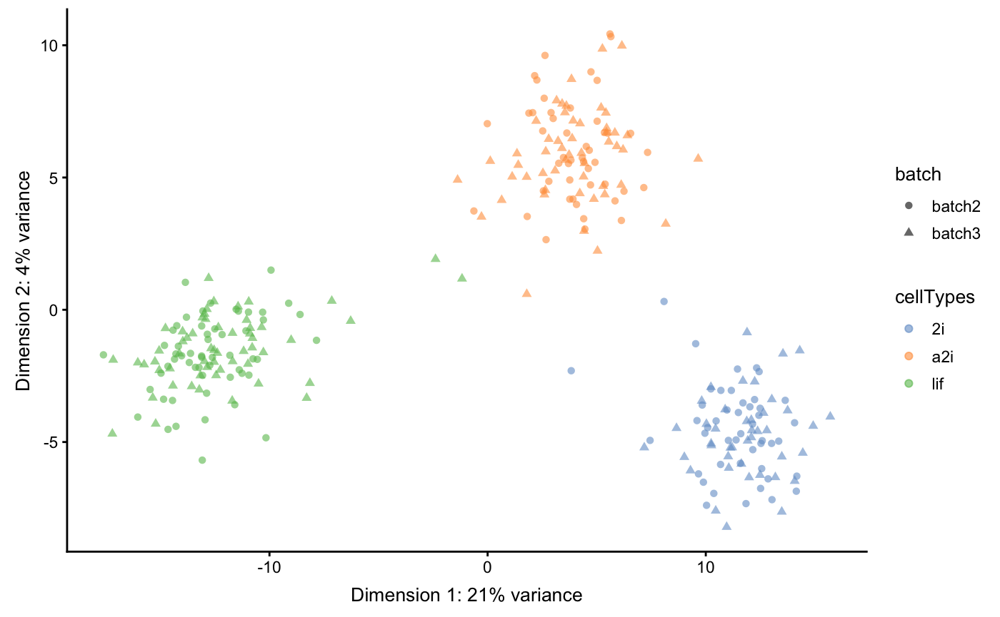
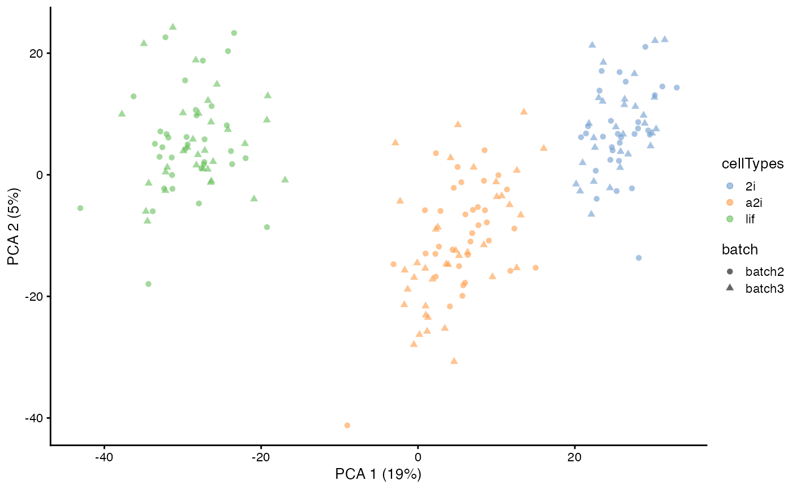
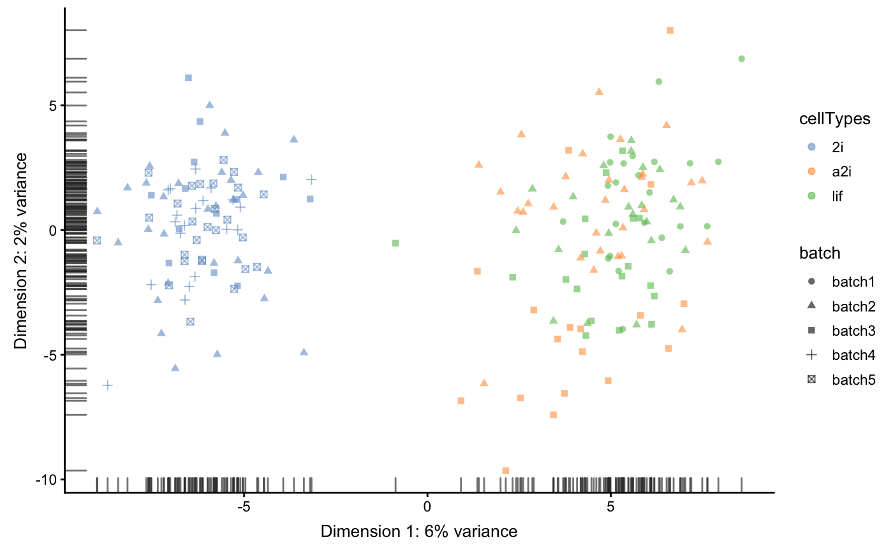
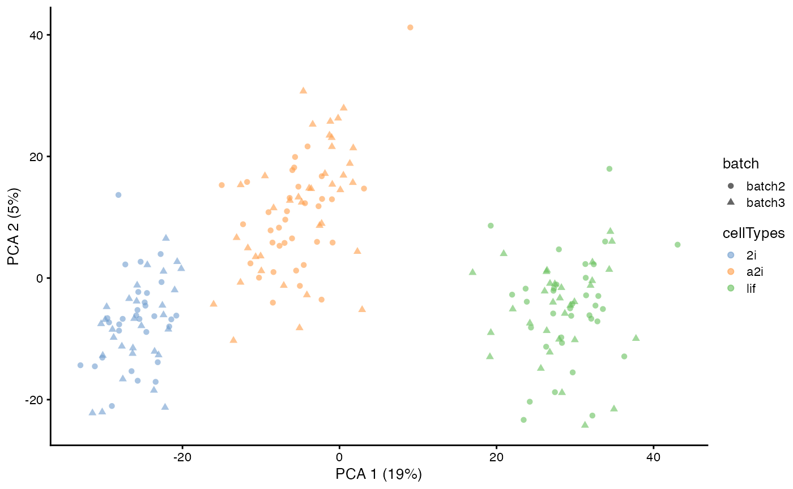
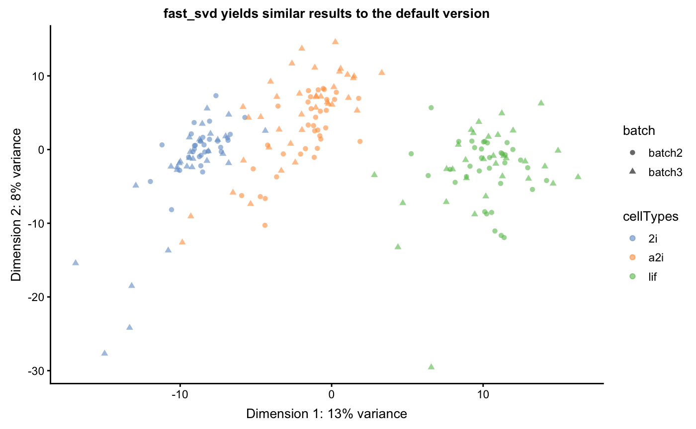

An introduction to the scMerge package
Yingxin Lin and Kevin Wang
02 Oct 2018
Source:vignettes/scMerge.Rmd
scMerge.RmdIntroduction
The scMerge algorithm allows batch effect removal and normalisation for single cell RNA-Seq data. It comprises of three key components including:
- The identification of stably expressed genes (SEGs) as “negative controls” for estimating unwanted factors;
- The construction of pseudo-replicates to estimate the effects of unwanted factors; and
- The adjustment of the datasets with unwanted variation using a fastRUVIII model.
The purpose of this vignette is to illustrate some uses of scMerge and explain its key components.
Loading Packages and Data
We will load the scMerge package. We designed our package to be consistent with the popular BioConductor’s single cell analysis framework, namely the SingleCellExperiment package and scater.
suppressPackageStartupMessages({
library(SingleCellExperiment)
library(scMerge)
library(scMerge.data)
library(scater)
})We provided an illustrative mouse embryonic stem cell (mESC) data in our package, as well as a set of pre-computed stably expressed gene (SEG) list to be used as negative control genes.
## mouse ESC data
data("sce_mESC", package = "scMerge.data")
## single-cell stably expressed gene list
data("segList_ensemblGeneID")
## single-cell stably expressed gene list
data("segList_ensemblGeneID")In the mESC data, we pooled data from 5 different batches from three different cell types. Using a PCA plot, we can see that despite strong separation of cell types, there is also a strong separation due to batch effects. This information is stored in the colData of sce_mESC.
table(sce_mESC$batch, sce_mESC$cellTypes)
#>
#> 2i a2i lif
#> batch1 0 0 81
#> batch2 82 93 90
#> batch3 59 66 79
#> batch4 72 0 0
#> batch5 82 0 0
scater::plotPCA(sce_mESC,
colour_by = "cellTypes",
shape_by = "batch")
Illustrating pseudo-replicates constructions
The first major component of scMerge is to obtain negative controls for our normalisation. In this vignette, we will be using a set of pre-computed SEGs from a single cell mouse data.
The second major component of scMerge is to compute pseudo-replicates for cells so we can perform normalisation. We offer three major ways of computing this pseudo-replicate information:
- Unsupervised clustering, using k-means clustering;
- Supervised clustering, using known cell type information; and
- Semi-supervised clustering, using partially known cell type information.
Unsupervised scMerge
In unsupervised scMerge, we will perform a k-means clustering to obtain pseudo-replicates. This requires the users to supply a kmeansK vector with each element indicating number of clusters in each of the batches. For example, we know the first, forth, and fifth batch contains only one cell type and the second and third batch contains three cell types. Hence, kmeansK = c(1,3,3,1,1) in this case.
sce_mESC <- scMerge(sce_combine = sce_mESC,
ctl = segList_ensemblGeneID$mouse$mouse_scSEG,
kmeansK = c(1,3,3,1,1),
assay_name = "scMerge_unsupervised")We now colour construct the PCA plot again on our normalised data. We can observe a much better separation by cell type and less separation by batches.
sce_mESC <- scater::runPCA(sce_mESC,
exprs_values = "scMerge_unsupervised")
scater::plotPCA(sce_mESC,
colour_by = "cellTypes",
shape_by = "batch")
Selecting all cells
By default, scMerge only uses 50% of the cells to perform kmeans clustering. While this is sufficient to perform a satisfactory normalisation in most cases, users can control if they wish all cells be used in the kmeans clustering.
sce_mESC <- scMerge(sce_mESC,
ctl = segList_ensemblGeneID$mouse$mouse_scSEG,
kmeansK = c(1,3,3,1,1),
assay_name = "scMerge_unsupervised_all",
replicate_prop = 1)sce_mESC <- scater::runPCA(sce_mESC,
exprs_values = "scMerge_unsupervised_all")
scater::plotPCA(sce_mESC,
colour_by = "cellTypes",
shape_by = "batch")
Supervised scMerge
If all cell type information is available to the user, then it is possible to use this information to create pseudo-replicates. This can be done through the cell_type argument in the scMerge function.
sce_mESC <- scMerge(sce_mESC,
ctl = segList_ensemblGeneID$mouse$mouse_scSEG,
kmeansK = c(1,3,3,1,1),
assay_name = "scMerge_supervised",
cell_type = sce_mESC$cellTypes)sce_mESC <- scater::runPCA(sce_mESC,
exprs_values = "scMerge_supervised")
scater::plotPCA(sce_mESC,
colour_by = "cellTypes",
shape_by = "batch")
Semi-supervised scMerge I
If the user is only able to access partial cell type information, then it is still possible to use this information to create pseudo-replicates. This can be done through the cell_type and cell_type_inc arguments in the scMerge function. cell_type_inc should contain a vector of indices indicating which elements in the cell_type vector should be used to perform semi-supervised scMerge.
sce_mESC <- scMerge(sce_mESC,
ctl = segList_ensemblGeneID$mouse$mouse_scSEG,
kmeansK = c(1,3,3,1,1),
assay_name = "scMerge_semisupervised1",
cell_type = sce_mESC$cellTypes,
cell_type_inc = which(sce_mESC$cellTypes == "2i"))sce_mESC <- scater::runPCA(sce_mESC,
exprs_values = "scMerge_semisupervised1")
scater::plotPCA(sce_mESC,
colour_by = "cellTypes",
shape_by = "batch")
Semi-supervised scMerge II
There is alternative semi-supervised method to create pseudo-replicates for scMerge. This uses known cell type information to identify mutual nearest clusters and it is achieved via the cell_type and cell_type_match = TRUE options in the scMerge function.
sce_mESC <- scMerge(sce_mESC,
ctl = segList_ensemblGeneID$mouse$mouse_scSEG,
kmeansK = c(1,3,3,1,1),
assay_name = "scMerge_semisupervised2",
cell_type = sce_mESC$cellTypes,
cell_type_match = TRUE)sce_mESC <- scater::runPCA(sce_mESC,
exprs_values = "scMerge_semisupervised2")
scater::plotPCA(sce_mESC,
colour_by = "cellTypes",
shape_by = "batch")
Achieving fast computation
Under most circumstances, scMerge is fast enough to be used on a personal laptop for a moderately large data like the mESC data (24224 features and 704 cells). For example, a basic run of the scMerge algorithm takes roughly 40 seconds.
t1 = Sys.time()
sce_mESC <- scMerge(sce_mESC,
ctl = segList_ensemblGeneID$mouse$mouse_scSEG,
kmeansK = c(1,3,3,1,1),
assay_name = "scMerge_classical")
#> No maker nor marker_list information was supplied
#> Finding HVG...
#> [1] 3082
#> Clustering within each batch...
#> Performing pca...
#> Creating Mutual Nearest Cluster...
#> [1] 1
#> [1] 2
#> [1] 3
#> [1] 4
#> [1] 5
#> [1] 6
#> [1] 7
#> group batch cluster
#> 1 3 2 1
#> 2 3 3 2
#> 3 1 2 2
#> 4 1 3 1
#> 5 2 2 3
#> 6 2 3 3
#> 7 2 1 1
#> 8 1 4 1
#> 9 1 5 1
#> Dimension of the replicates mapping matrix
#> [1] 704 356
#>
#> Performing RUV normalisation... This might take a few minutes...
t2 = Sys.time()
t2 - t1
#> Time difference of 25.47032 secsHowever, we do recognise the difficulties associated with computation when dealing with larger data. To this end, we devised a fast version of scMerge. The major difference between the two versions lies on the noise estimation component, which utilised singular value decomposition (SVD). In order to speed up scMerge, we used the randomised SVD algorithm, which is able to obtain a very accurate approximation of the noise structure in the data by performing a partial SVD. This option is achieved via the option fast_svd = TRUE and rsvd_prop. rsvd_prop is a parameter between 0 and 1, controlling the degree of approximations.
We recommend only use this option when the number of cells is large in your single cell data. The speed advantage we obtain for large signgle cell data is much more dramatic than on a smaller dataset like the example mESC data.
t3 = Sys.time()
sce_mESC <- scMerge(sce_mESC,
ctl = segList_ensemblGeneID$mouse$mouse_scSEG,
kmeansK = c(1,3,3,1,1),
assay_name = "scMerge_fast",
fast_svd = TRUE,
rsvd_prop = 0.1)
#> No maker nor marker_list information was supplied
#> Finding HVG...
#> [1] 3082
#> Clustering within each batch...
#> Performing pca...
#> Creating Mutual Nearest Cluster...
#> [1] 1
#> [1] 2
#> [1] 3
#> [1] 4
#> [1] 5
#> [1] 6
#> [1] 7
#> group batch cluster
#> 1 1 2 1
#> 2 1 3 1
#> 3 2 2 2
#> 4 2 3 2
#> 5 3 2 3
#> 6 3 3 3
#> 7 2 1 1
#> 8 1 4 1
#> 9 1 5 1
#> Dimension of the replicates mapping matrix
#> [1] 704 356
#>
#> Performing RUV normalisation... This might take a few minutes...
t4 = Sys.time()
t4 - t3
#> Time difference of 21.19454 secssce_mESC <- scater::runPCA(sce_mESC,
exprs_values = "scMerge_fast")
scater::plotPCA(sce_mESC,
colour_by = "cellTypes",
shape_by = "batch") +
labs(title = "fast_svd yields similar results to the default version")
Session Info
sessionInfo()
#> R version 3.5.1 (2018-07-02)
#> Platform: x86_64-apple-darwin15.6.0 (64-bit)
#> Running under: macOS High Sierra 10.13.4
#>
#> Matrix products: default
#> BLAS: /Library/Frameworks/R.framework/Versions/3.5/Resources/lib/libRblas.0.dylib
#> LAPACK: /Library/Frameworks/R.framework/Versions/3.5/Resources/lib/libRlapack.dylib
#>
#> locale:
#> [1] en_AU.UTF-8/en_AU.UTF-8/en_AU.UTF-8/C/en_AU.UTF-8/en_AU.UTF-8
#>
#> attached base packages:
#> [1] parallel stats4 stats graphics grDevices utils datasets
#> [8] methods base
#>
#> other attached packages:
#> [1] scater_1.8.4 ggplot2_3.0.0
#> [3] scMerge.data_0.0.1 scMerge_0.1.11
#> [5] SingleCellExperiment_1.2.0 SummarizedExperiment_1.10.1
#> [7] DelayedArray_0.6.5 BiocParallel_1.14.2
#> [9] matrixStats_0.54.0 Biobase_2.40.0
#> [11] GenomicRanges_1.32.6 GenomeInfoDb_1.16.0
#> [13] IRanges_2.14.11 S4Vectors_0.18.3
#> [15] BiocGenerics_0.26.0
#>
#> loaded via a namespace (and not attached):
#> [1] bitops_1.0-6 fs_1.2.6
#> [3] RColorBrewer_1.1-2 rprojroot_1.3-2
#> [5] numDeriv_2016.8-1 tools_3.5.1
#> [7] backports_1.1.2 irlba_2.3.2
#> [9] R6_2.2.2 KernSmooth_2.23-15
#> [11] vipor_0.4.5 lazyeval_0.2.1
#> [13] colorspace_1.3-2 withr_2.1.2
#> [15] tidyselect_0.2.4 gridExtra_2.3
#> [17] compiler_3.5.1 xml2_1.2.0
#> [19] desc_1.2.0 labeling_0.3
#> [21] caTools_1.17.1.1 scales_1.0.0
#> [23] pkgdown_1.1.0.9000 commonmark_1.5
#> [25] stringr_1.3.1 digest_0.6.16
#> [27] rmarkdown_1.10.12 XVector_0.20.0
#> [29] pkgconfig_2.0.2 htmltools_0.3.6
#> [31] ruv_0.9.7 bbmle_1.0.20
#> [33] limma_3.36.3 rlang_0.2.2
#> [35] htmldeps_0.1.1 rstudioapi_0.7
#> [37] shiny_1.1.0 prettydoc_0.2.1
#> [39] DelayedMatrixStats_1.2.0 bindr_0.1.1
#> [41] gtools_3.8.1 dplyr_0.7.6
#> [43] RCurl_1.95-4.11 magrittr_1.5
#> [45] GenomeInfoDbData_1.1.0 Matrix_1.2-14
#> [47] Rcpp_0.12.18 ggbeeswarm_0.6.0
#> [49] munsell_0.5.0 Rhdf5lib_1.2.1
#> [51] viridis_0.5.1 stringi_1.2.4
#> [53] yaml_2.2.0 edgeR_3.22.3
#> [55] MASS_7.3-50 zlibbioc_1.26.0
#> [57] gplots_3.0.1 rhdf5_2.24.0
#> [59] plyr_1.8.4 grid_3.5.1
#> [61] gdata_2.18.0 M3Drop_1.6.0
#> [63] promises_1.0.1 shinydashboard_0.7.0
#> [65] crayon_1.3.4 lattice_0.20-35
#> [67] cowplot_0.9.3 locfit_1.5-9.1
#> [69] knitr_1.20 pillar_1.3.0
#> [71] igraph_1.2.2 rjson_0.2.20
#> [73] reshape2_1.4.3 codetools_0.2-15
#> [75] glue_1.3.0 evaluate_0.11
#> [77] data.table_1.11.4 httpuv_1.4.5
#> [79] foreach_1.4.4 gtable_0.2.0
#> [81] purrr_0.2.5 assertthat_0.2.0
#> [83] rsvd_0.9 mime_0.5
#> [85] xtable_1.8-3 RcppEigen_0.3.3.4.0
#> [87] roxygen2_6.1.0 later_0.7.4
#> [89] viridisLite_0.3.0 tibble_1.4.2
#> [91] iterators_1.0.10 beeswarm_0.2.3
#> [93] memoise_1.1.0 tximport_1.8.0
#> [95] bindrcpp_0.2.2 statmod_1.4.30